Multimodal UAV Control via Voice and SSVEP
A custom UAV testbed for hands free drone control, integrating voice recognition and SSVEP based command verification through an ESP32 routing layer and Betaflight flight controller configuration. Validated across three control modes with 98.8% command accuracy and a mean latency of 2.08 seconds.
Overview
Presented at the UW Undergraduate Symposium by a four person interdisciplinary team: one Aeronautics & Astronautics student (me), one ECE student, one CS student, and one Biochemistry student.
The goal was to build a safer multimodal UAV control system by combining voice recognition with SSVEP based command verification, so that a drone command executes only when both input channels agree. I was the primary contributor for UAV hardware, drone integration, flight controller setup, the hardware command pipeline, safety and testing procedures, and a significant portion of the software integration work.
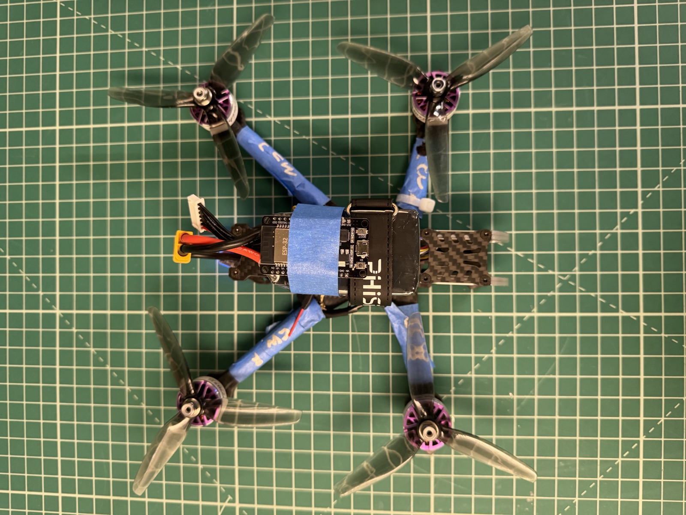
Problem & Approach
Voice recognition offers fast and intuitive drone control, but it is vulnerable to background noise, pronunciation variation, and misclassification. Relying on a single input channel increases the risk of unintended command execution.
To reduce this risk, the project combined voice recognition with SSVEP based verification as a second confirmation layer. SSVEP (steady state visual evoked potential) is a brain response that occurs when a user focuses on a flickering visual stimulus. The EEG signal at the stimulus frequency increases measurably, allowing classification of the intended command based on which frequency the user attends to. In multimodal mode, a drone command executes only when the voice prediction and the SSVEP prediction match. If the two predictions disagree, the command is rejected.
Nine commands were mapped across both input systems: TAKEOFF, STOP, LAND, RIGHT, FORWARD, BACKWARD, LEFT, UP, and DOWN. The system was evaluated across three control modes: voice only, SSVEP only, and voice combined with SSVEP.
System Architecture
Voice commands are classified using a Vosk-based speech recognition model running on a host machine. SSVEP commands are classified using Canonical Correlation Analysis (CCA), evaluated against target stimulus frequencies ranging from 9.25 Hz to 14.75 Hz, with each drone command mapped to a specific frequency.
The CCA output confidence score is thresholded at 0.566, determined using Youden's J Index, to filter low-confidence classifications. In multimodal mode, the command routing layer compares the voice and SSVEP predictions before forwarding any command to the flight controller.
On the hardware side, the pipeline routes through an ESP32 to a DolphinRC F405 V3 flight controller running Betaflight. Because real-time EEG acquisition produced noisy signals without clear stimulus-locked peaks at the target frequencies, SSVEP commands during hardware testing were simulated using keyboard inputs mapped to the seven target frequencies. This decision is discussed further in the Limitations section.
My Role
Within the four person team, I was responsible for nearly all UAV hardware work and contributed significantly to the software pipeline.
Hardware
- Drone hardware assembly, soldering, and wiring.
- Part selection and propulsion system sizing.
- DolphinRC F405 V3 flight controller configuration in Betaflight: receiver setup, motor mapping, mode configuration, and safety behavior.
- ESP32 command routing and embedded interface setup.
- Baseline RC flight demonstration to verify airframe, motor, and flight controller readiness.
Software & Integration
- Command pipeline integration connecting the processing layer to the flight controller.
- Latency measurement pipeline design and data collection across all three control modes.
- Safety and testing procedure development.
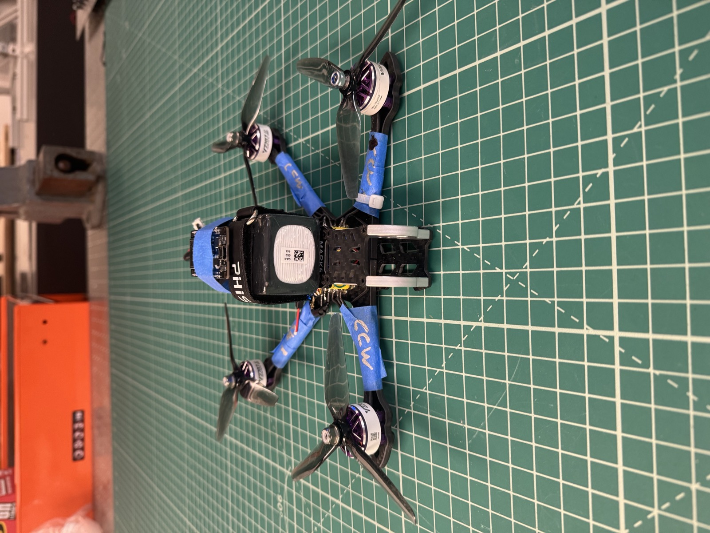
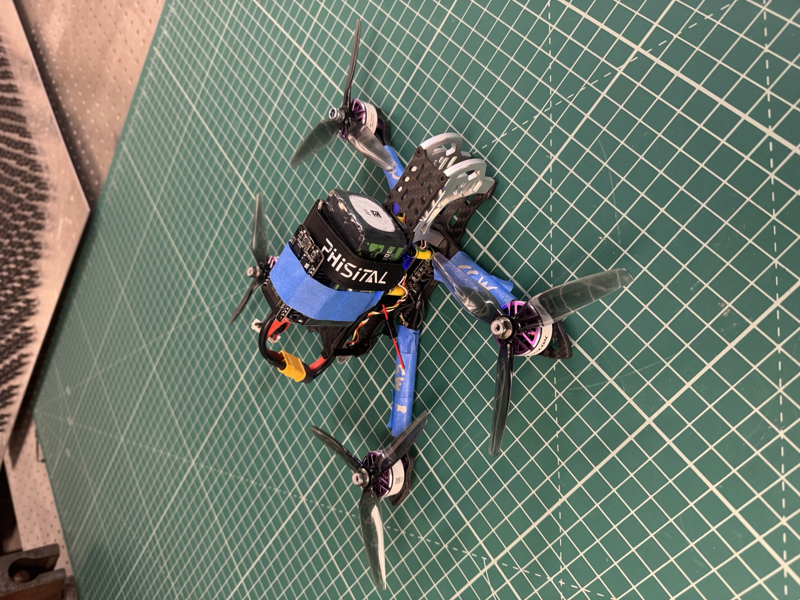
Evidence
The following artifacts support this project:
- Project code repository with software integration, command routing, and latency measurement scripts.
- Latency measurement data comparing voice only, SSVEP only, and multimodal control modes.
- Baseline RC flight demonstration video showing successful takeoff, hover, directional control, and landing.
- UW Undergraduate Symposium poster presented at the Spring 2026 symposium.
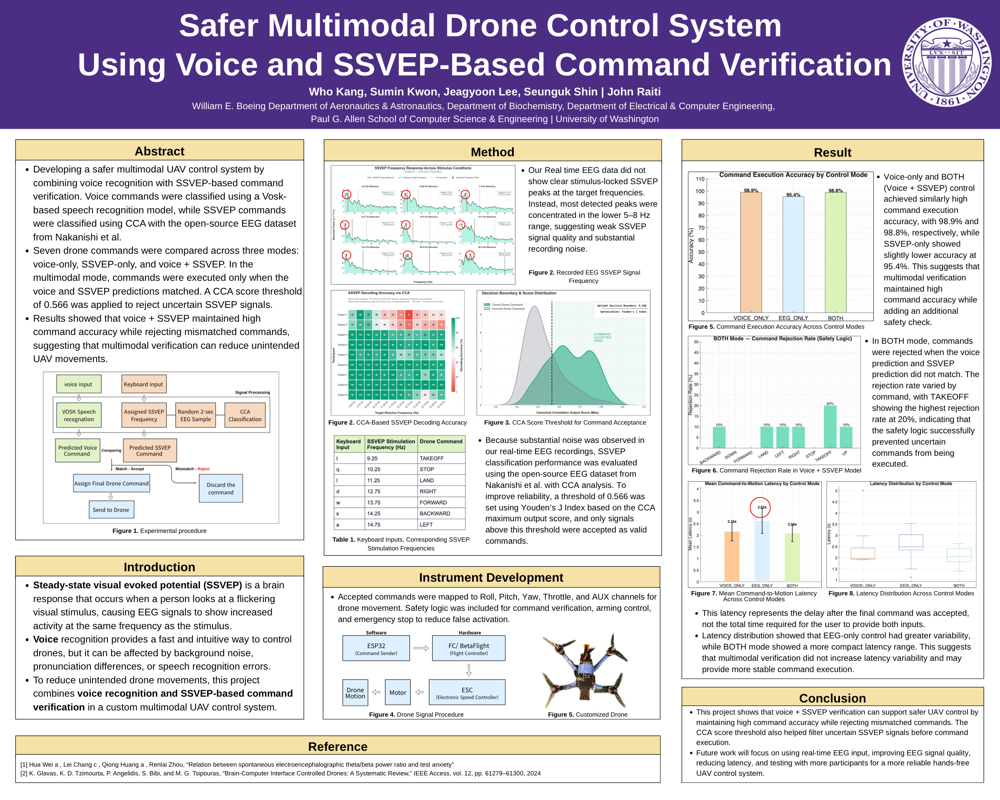
Outcome
Across 270 trials, the multimodal mode achieved the highest accuracy and the lowest mean latency of the three modes tested. Seven out of 90 multimodal trials were rejected due to channel disagreement or missing input, demonstrating that the safety logic actively filtered uncertain commands rather than executing them blindly. Zero misclassifications occurred in the multimodal mode.
| Metric | Voice Only | SSVEP Only | Multimodal |
|---|---|---|---|
| Accuracy | 97.8% | 95.4% | 98.8% |
| Mean Latency | 2.16 s | 2.62 s | 2.08 s |
| Misclassifications | 2 | 4 | 0 |
| Rejected Commands | — | — | 7 |
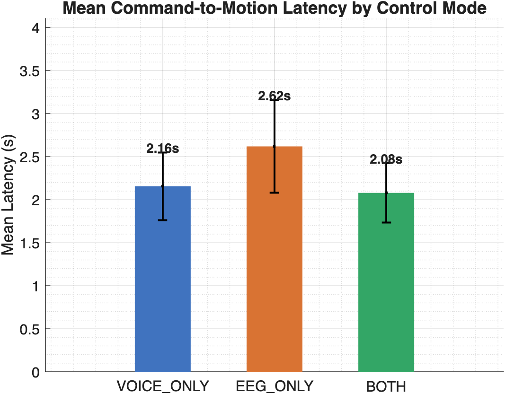
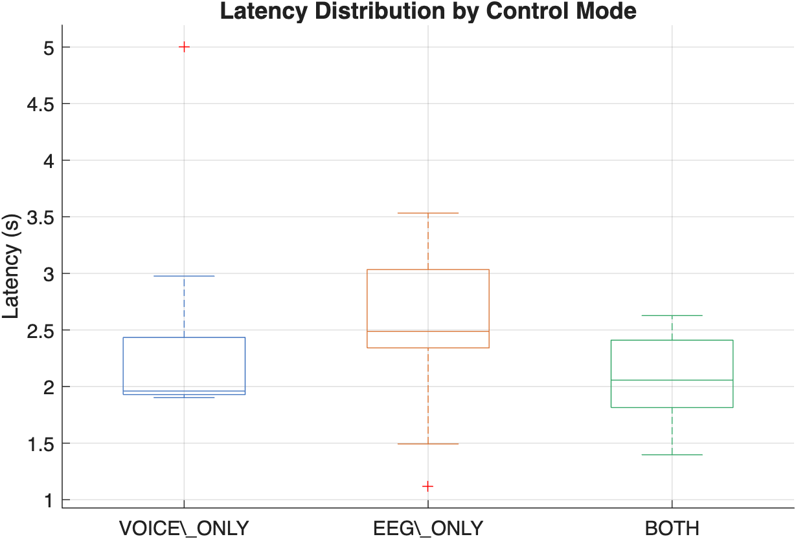
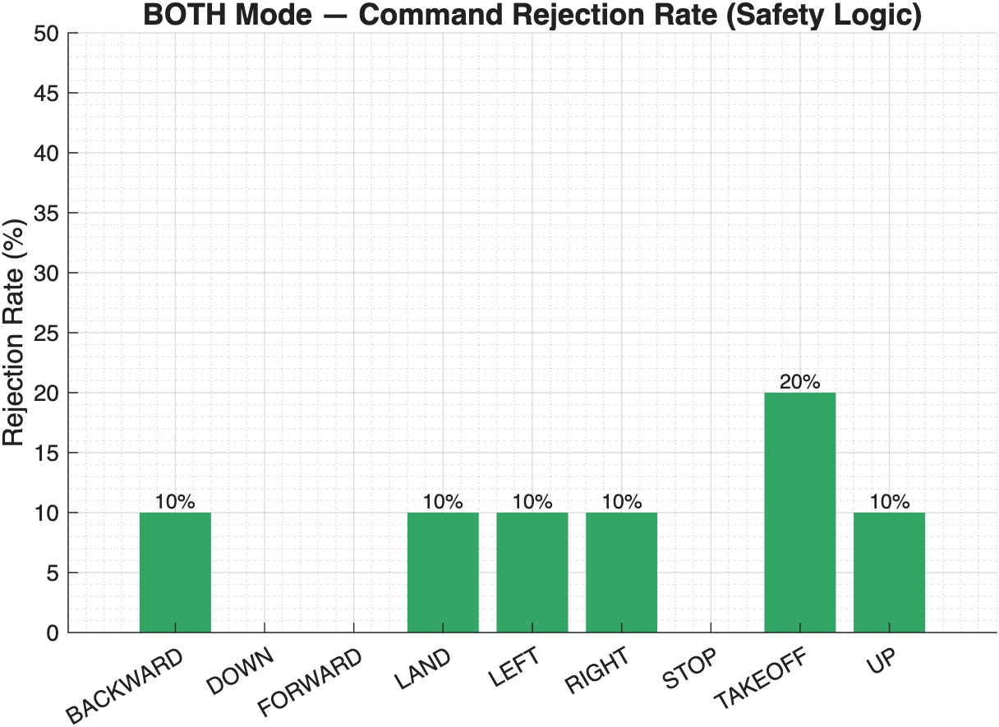
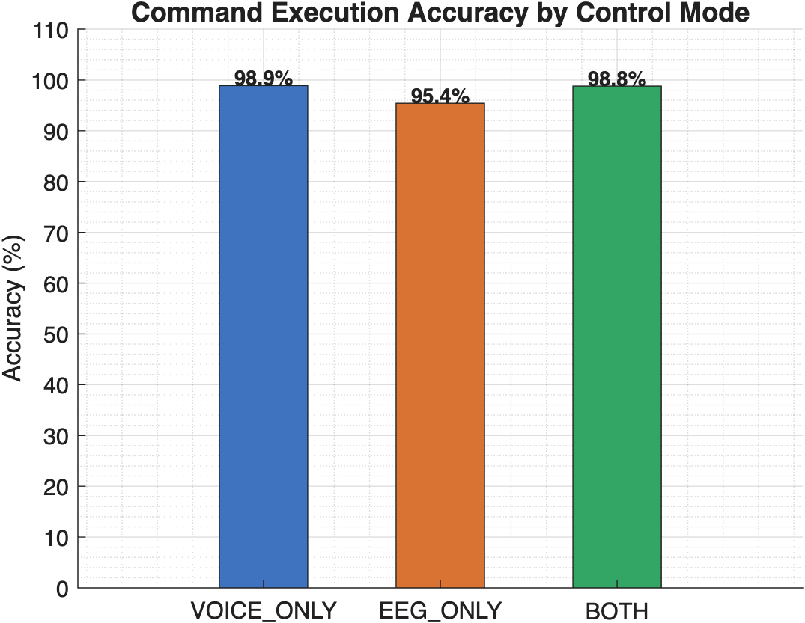
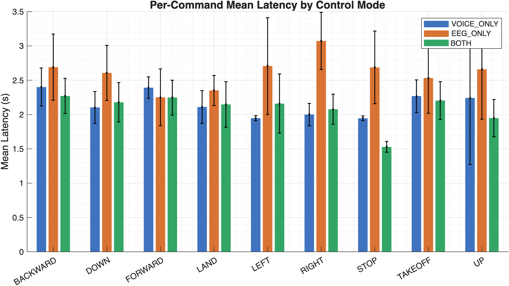
Limitations
Real-time EEG acquisition did not produce clean SSVEP signals. Recorded peaks concentrated in the 5 to 8 Hz range rather than at the target stimulus frequencies, indicating significant noise and weak stimulus-locked responses. SSVEP classification performance was therefore evaluated using the open-source EEG dataset from Nakanishi et al. rather than live subject data.
Manual RC override was explored as a safety fallback but was not preserved in the final test configuration due to UART integration errors. The drone was not flown under live multimodal voice and SSVEP control. The baseline flight demonstration was completed under standard RC control only.
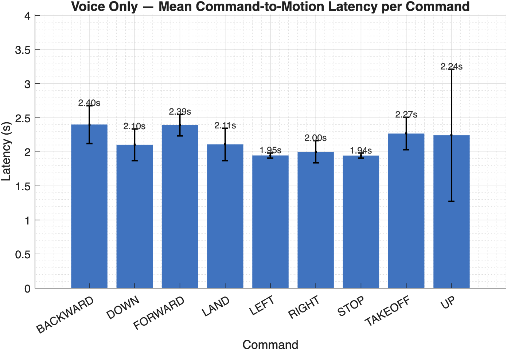
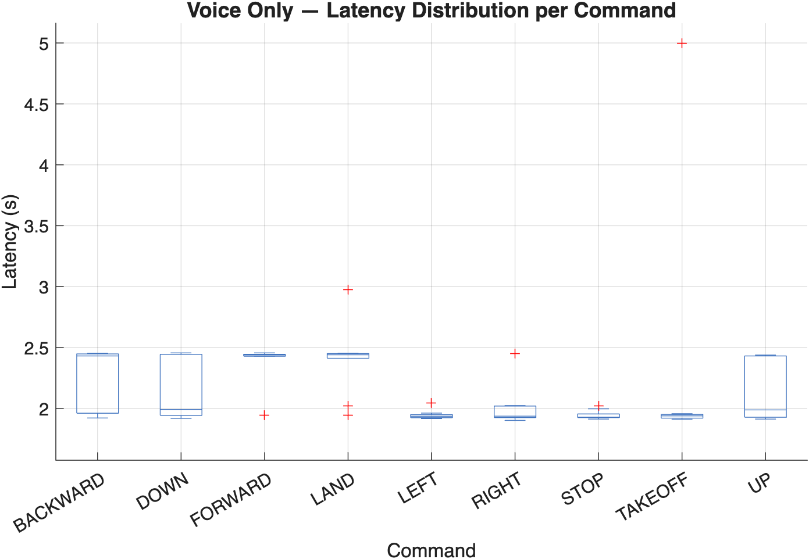
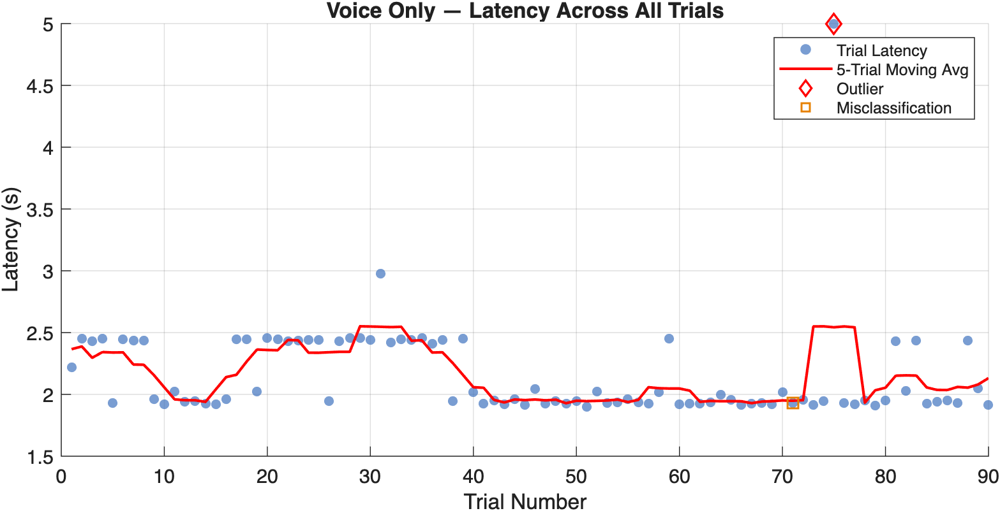
Next Steps
Following the UW Undergraduate Symposium presentation, the project is transitioning toward an undergraduate thesis. The thesis will extend the bench-level validation work into a full flight-condition evaluation of the multimodal pipeline.
Immediate hardware priorities include resolving the UART integration issue to restore a reliable manual RC override path, and improving real-time EEG signal quality through better electrode placement and noise shielding.
For flight-condition latency measurement, the plan is to mount the UAV on a 6 DOF gimbal to enable controlled motion testing in a constrained environment. This allows latency and command accuracy to be measured under actual flight dynamics without the safety constraints of free flight, and with live SSVEP classification rather than keyboard-simulated inputs.